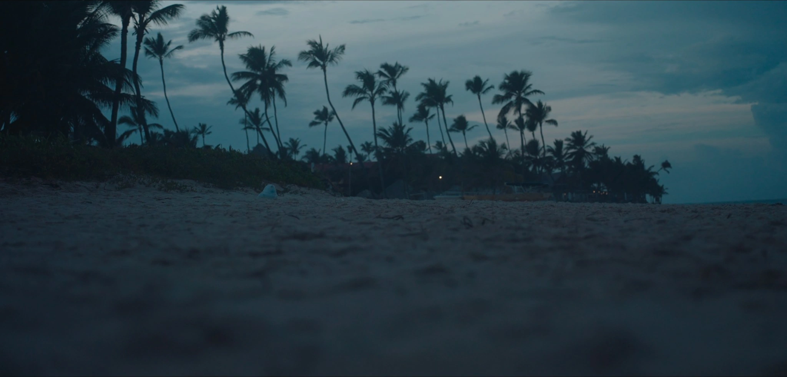

Henri de Canecaude
AshJr
Writer·Director
Everything you can imagine is real.
All Projects

ABOUT
Henri
de Canecaude.
I’m a French filmmaker raised between London and Washington, D.C. I write and direct narrative films, documentaries and commercial work.
I also edit many of my projects, which keeps me closely involved from the first draft through to the final cut. My work so far has taken me across France, the UK, the Caribbean and Panama.
Work with me